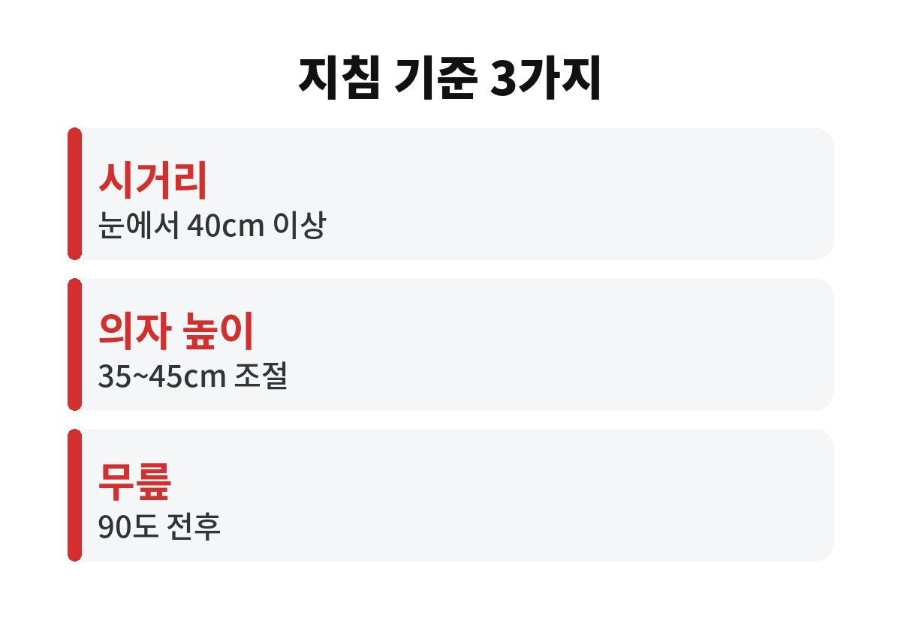
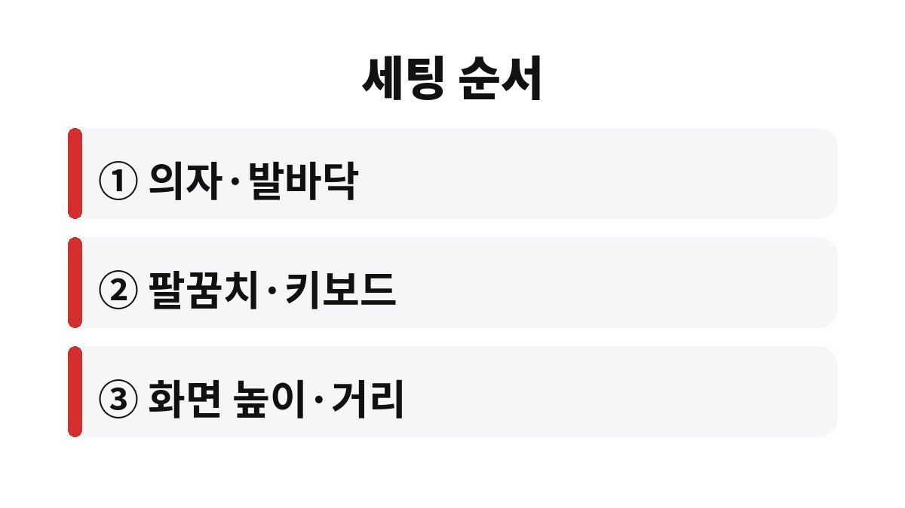

모니터 높이는 화면 윗선을 눈높이에 맞추고 눈에서 40cm 이상 떨어뜨리는 것이 고용노동부 지침의 기준이다.
의자와 책상은 그 화면에 맞춰 거꾸로 정한다. 발바닥이 바닥에 닿고 무릎이 90도 전후가 되는 의자 높이에서 시작하면 나머지가 따라온다.
화면이 눈높이보다 한참 아래에 있으면 고개가 앞으로 숙여진다. 반대로 너무 높으면 턱이 들리고 눈이 크게 떠진다.
책상 위에 노트북을 그대로 올려 쓰는 경우는 대부분 앞쪽이다. 화면을 내려다보는 시간이 하루 몇 시간씩 쌓이면 목과 어깨가 먼저 뻐근해진다.
모니터 높이는 취향이 아니다. 고용노동부의 영상표시단말기(VDT) 취급근로자 작업관리지침에는 몸이 버틸 수 있는 범위가 숫자로 적혀 있다.
지침은 작업자의 시선을 수평선에서 아래로 10~15도 이내에 두고, 화면 윗선을 눈높이와 맞추라고 적는다.
의자는 앉는 면 높이를 바닥에서 35~45cm 범위로 조절할 수 있어야 한다. 아래 표는 확인할 자리를 한곳에 모은 것이다.
| 확인할 곳 | 지침 기준 | 확인 방법 |
|---|---|---|
| 화면 높이 | 화면 윗선과 눈높이 일치 | 앉아서 정면을 볼 때 윗선 위치를 본다 |
| 눈과 화면 거리 | 40cm 이상 | 자로 한 번 재 본다 |
| 의자 높이 | 바닥에서 35~45cm 조절 | 발바닥 전체가 바닥에 닿는지 본다 |
| 무릎 | 90도 전후 | 종아리와 의자 앞 사이에 손가락이 들어가는지 본다 |
| 팔꿈치 | 90도 이상, 어깨가 들리지 않게 | 키보드를 칠 때 어깨가 올라가는지 본다 |
| 책상 높이 | 고정형 60~70cm, 조절형 65cm 전후 | 팔꿈치와 책상 면 높이를 비교한다 |


노트북은 화면과 키보드가 붙어 있어 화면을 올리면 키보드도 같이 올라간다. 그러면 팔꿈치가 지침 기준인 90도 이상을 넘어 크게 벌어지고 어깨가 들린다.
외장 키보드를 따로 쓰고 노트북은 받침에 올리는 쪽이 지침의 자세에 가깝다. 이동이 잦아 그렇게 못 한다면 하루 중 오래 앉는 자리만이라도 이 구성으로 맞춘다.
지침은 화면 바탕이 검정 계통이면 300~500럭스, 흰색 계통이면 500~700럭스의 조도를 권한다. 빛이 작업면에 닿는 각도는 화면으로부터 45도 이내로 하고, 창에는 차광망이나 커튼을 달라고 적는다.
문서 작업이 많아 흰 화면을 오래 보는 사람은 낮에 창가 자리가 오히려 눈이 더 피로할 수 있다.
의자를 올려 책상 높이에 맞추다 보면 발이 뜨는 경우가 있다. 지침은 이때 발받침대를 두라고 안내한다.
발이 떠 있으면 허벅지 뒤쪽이 눌려 다리가 붓기 쉽고, 자세도 앞으로 쏠린다.
이 수치는 일반 기준이라 키가 아주 크거나 작은 사람에게는 맞지 않을 수 있다. 숫자에 몸을 억지로 맞추기보다 불편한 곳이 어디인지 보고 한 곳씩 조정한다.
화면 윗선이 눈높이에 오게 하려면 눈 위치가 먼저 정해져 있어야 한다. 의자 높이를 바꾸면 눈 위치가 달라지므로 모니터 높이는 항상 의자 다음에 맞춘다.
순서가 뒤바뀌면 모니터를 한 번 맞춰 놓고 의자를 조절할 때마다 다시 고쳐야 한다.
글자가 작아 잘 안 보이면 몸이 화면 쪽으로 기울고 고개가 나온다. 시거리 40cm 이상을 지키면서 글자 크기를 키우는 쪽이 자세를 덜 무너뜨린다.
지침은 서류받침대를 쓸 때 화면과 같은 높이, 같은 거리에 두라고 적는다. 모니터 두 대를 쓴다면 더 자주 보는 쪽을 몸 정면에 두고, 다른 쪽은 살짝 각도를 틀어 목을 돌리는 횟수를 줄인다.
작업실 온도는 18~24도, 습도는 40~70%로 안내되어 있어 난방이 센 사무실에서는 눈이 건조하지 않은지도 함께 본다.
내일 출근하면 옆모습 사진을 한 장 찍어 달라고 부탁해 본다. 화면 윗선과 눈, 무릎과 팔꿈치 각도가 한 번에 보인다.
사진 속 자세가 지침 숫자와 다르다면 의자 높이부터 한 칸씩 바꿔 가며 다시 찍어 비교한다. 한 번에 전부 바꾸면 어느 조정이 몸에 맞았는지 알 수 없다.
높이를 맞춘 뒤에도 목·어깨 통증이나 눈 피로가 쉬어도 계속되면 정형외과나 안과에서 상담받는 것이 빠르다.
참고 자료: 고용노동부 고시 「영상표시단말기(VDT) 취급근로자 작업관리지침」(2026년 11월 확인)
※ 2026년 기준 공식 기준을 바탕으로 정리한 일반 건강 정보이며, 증상이 계속되거나 지병이 있다면 전문의와 상담하길 바란다.